En Boyacá hay ciento veintitrés municipios, y he entrado en bicicleta a todos y cada uno de ellos. No por un récord — porque necesitaba saber, kilómetro a kilómetro, de qué estaba hecha mi tierra.
Lo que encontré fue un territorio que produce escaladores como otros lugares producen trigo: niños entrenando a tres mil metros, pendientes que no regalan nada, pueblos donde un campeón nacional nació en la calle principal. Y entre las subidas — pueblos de barro cocido, lagunas sagradas, plazas coloniales, y una calidez que convierte un día duro sobre la bicicleta en algo más parecido a la familia.
Ride The Andes existe para devolverle esa Boyacá al mundo como merece: desde el sillín, en la altura, ganada. Este dossier es el viaje que construimos para eso — diez días desde la laguna donde nació la leyenda de El Dorado hasta las carreteras del Gran Fondo Boyacá Mundial, el evento de 2.000 ciclistas que tengo el honor de dirigir hombro a hombro con mi padre — diez ediciones y contando.
Diez cupos por salida. Cuatro ventanas en 2027, con enero como la principal — y siempre el mismo grupo pequeño, rodando como uno solo.
Nos vemos en la carretera,
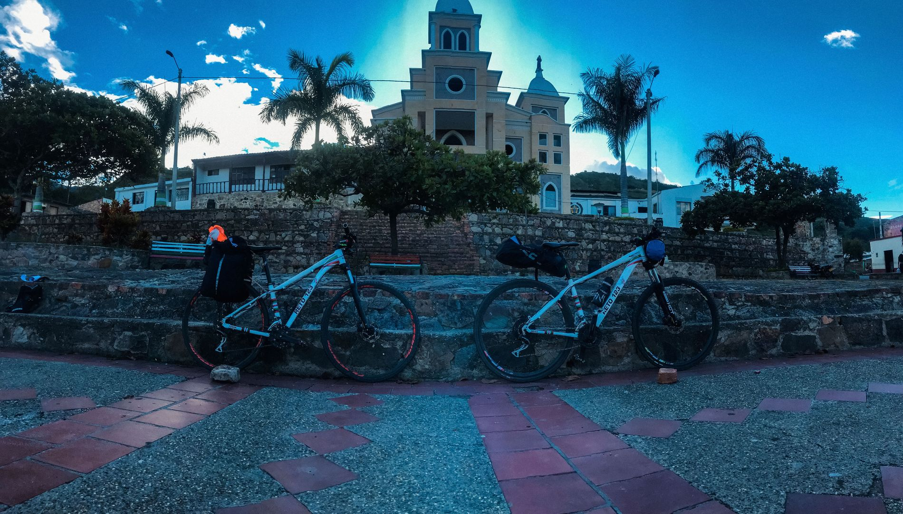
Dos cosas que conviene entender antes de leer un solo día del itinerario: a dónde vas, y hacia qué estás pedaleando la última mañana.
Colombia produce escaladores, y Boyacá produce los escaladores de Colombia.
Nairo Quintana, Miguel Ángel “Supermán” López, Mauricio Soler — todos boyacenses — y, en el más amplio altiplano cundiboyacense, Lucho Herrera, Egan Bernal y Daniel Felipe Martínez. Una porción desproporcionada de la nobleza ciclística del país aprendió a sufrir en estas carreteras. No es misticismo. Es altitud: una tierra alta entera viviendo, trabajando y compitiendo entre los 2.500 y los 3.500 metros, donde los niños suben al colegio por pendientes que acabarían con el fin de semana de la mayoría de los aficionados.
El resto es lo que nadie cuenta. Boyacá es donde Colombia se hizo país — el Puente de Boyacá, el Pantano de Vargas. Aquí está la plaza empedrada más grande del continente, un antiguo lecho marino convertido en desierto, y el lago más alto del país con una playa de arena blanca a 3.000 metros.
A noventa minutos de Bogotá, y casi por completo ausente de los itinerarios ciclísticos internacionales.
La mayoría de los viajes ciclísticos terminan con una salida más. El tuyo termina en un recorrido legendario.
El Gran Fondo Boyacá Mundial es el evento de ruta masivo más grande de Boyacá: más de 2.000 ciclistas saliendo de Duitama con vías cerradas, atravesando el departamento que crió a media mitad del pelotón colombiano. Lleva diez ediciones desde 2016 — y lo dirige tu propio guía.
Su recorrido no es casual. Sube el Alto del Cogollo, el ascenso del Campeonato Mundial de Ruta UCI de 1995, cuando Indurain, Pantani y Olano pasaron por las puertas de las casas en Duitama. Los ciclistas de la región nunca han dejado de medirse en él.
Tu etapa final rueda ese recorrido con el hombre que lo dirige — cada subida, cada pueblo y la misma llegada a Duitama, en vías abiertas y a tu ritmo. En la salida de octubre es la carrera de verdad: partida oficial, un resultado real, y 2.000 colombianos que te van a arrastrar en las subidas, gritarte en español y pasarte una aguapanela arriba. De cualquier forma terminas algo que existía mucho antes de que llegaras y seguirá mucho después.
Ruedas las mismas carreteras que los locales, toda la semana — perros de pueblo, chivas, campesinos en la berma. Esto es un territorio vivo, no un corredor.
No observas la cultura ciclística colombiana. Ruedas su recorrido más legendario con el hombre que lo dirige — y en octubre, con un número en la espalda.
Diez días construidos por el director del propio evento, en carreteras que ha rodado en los 123 municipios. Ningún operador externo tiene este acceso.
Seis etapas hiladas en diez días de gastronomía, historia y recuperación — secuenciadas para que te aclimates antes de los días grandes, con el recorrido del Gran Fondo Boyacá Mundial guardado para el final.
| Día | Etapa | Distancia | Ascenso | Noche en |
|---|---|---|---|---|
| Sáb 23 | E1 · Prólogo — La Leyenda de El Dorado | 34.0 km | +290 m | Zipaquirá |
| Dom 24 | E2 · El Camino a la Independencia | 53.0 km | +527 m | Villa de Leyva |
| Lun 25 | E3 · El Desierto y los Dinosaurios | 53.3 km | +759 m | Villa de Leyva |
| Mar 26 | Día de descanso · La Ruta de las Leyendas | — | — | Lago de Tota |
| Mié 27 | E4 · La Etapa Reina — Alto del Crucero | 51.6 km | +1.004 m | Lago de Tota |
| Jue 28 | E5 · Lago de Tota, Completo | 49.8 km | +506 m | Paipa |
| Vie 29 | Reconocimiento · Monguí y tejo | — | — | Paipa |
| Sáb 30 | E6 · El recorrido del Gran Fondo Boyacá Mundial | 143,6 km* | +2.120 m | Paipa |
| Seis etapas, una leyenda | 385 km | +5.200 m | 9 noches |
* Opción Medio Fondo en la etapa final: 103,2 km / +1.403 m. Fechas de la salida de enero; mayo, agosto y octubre siguen la misma secuencia. Todas las etapas publicadas en Ride with GPS.
Tu final rueda el recorrido del Gran Fondo Boyacá Mundial con el hombre que lo dirige. En la salida de octubre es día de carrera: partida oficial entre más de 2.000 ciclistas.
Cada carretera de esta ruta la ha rodado — muchas veces — el fundador que recorrió en bicicleta los 123 municipios de Boyacá. Esto es territorio, no itinerario.
La finca de Rigoberto Urán, la Zipaquirá de Egan Bernal, las subidas de infancia de Nairo Quintana — la peregrinación del ciclismo colombiano, tejida en tu semana.
Primero los valles bajos, después la alta montaña, con recuperación incorporada — termales, tardes de spa y un día de descanso justo donde tus piernas lo piden.
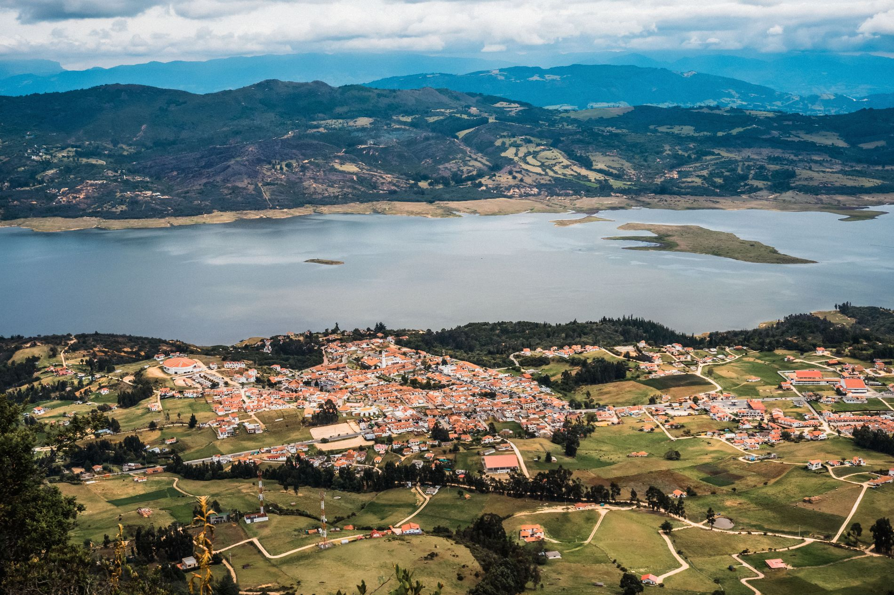
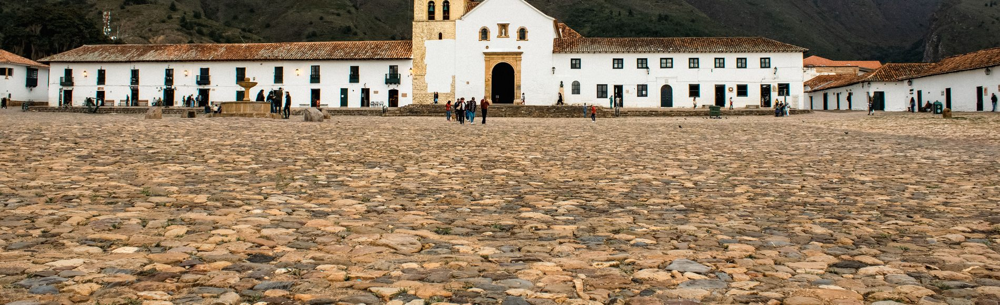
Hoy no se pedalea — tus piernas se recuperan mientras tu imaginación sigue andando. Un día recorriendo las carreteras donde se hicieron los campeones, que termina a 3.015 metros a la orilla del lago más grande de Colombia.
Las mismas subidas donde se forjó el escarabajo más grande de su generación — ganador del Giro de Italia y de la Vuelta a España.
Una parada en la casa donde Nairo vivió con sus padres — fotos y onces (el algo boyacense de media mañana, incluido) en el punto de origen de una leyenda.
Una parrilla a fuego vivo en el centro de tu propia mesa: eliges tus cortes y ves al parrillero llevarlos de la brasa al plato, frente a ti. Fuego, humo y sabor boyacense. Incluido
Tierra de ruanas — balcones coloniales, talleres de tejido y tradición artesanal, a ritmo de van y con todas las paradas que valen la pena.
Check-in a la orilla del lago a 3.015 metros — tu campamento base para los días reina. Cena junto al agua · incluido. Mañana, la montaña.
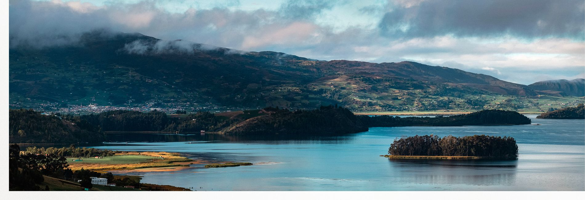
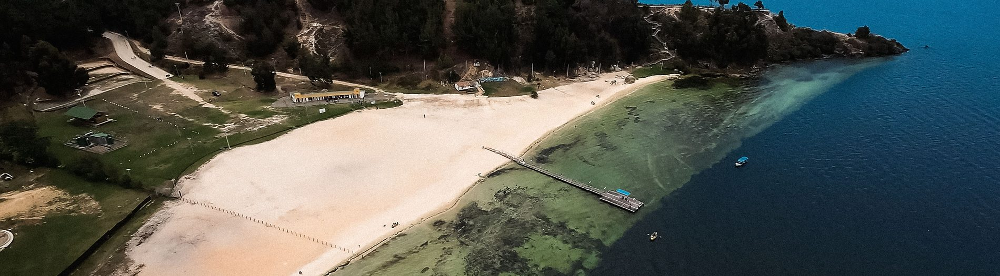
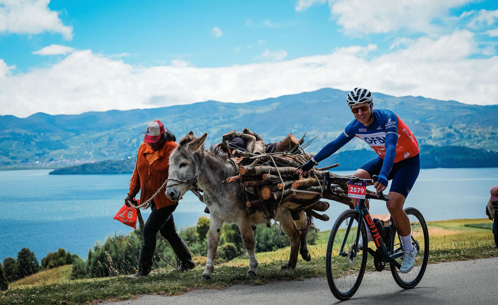
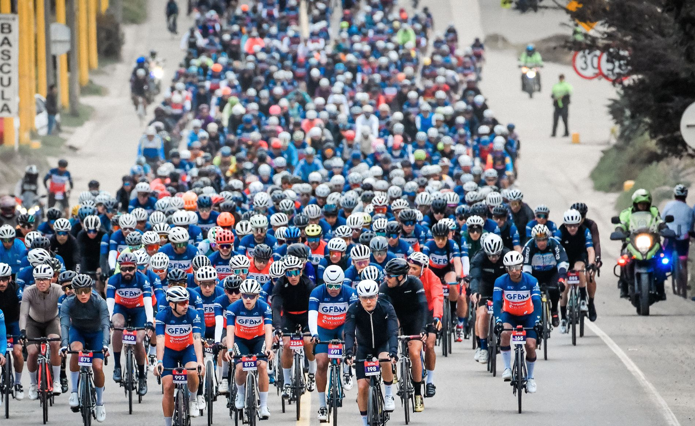
Esto es exactamente lo que cubre tu viaje — y, con la misma claridad, las pocas cosas que no.
Hoteles cuatro estrellas en toda la ruta — casonas coloniales en Villa de Leyva y Zipaquirá, una estadía a orillas del Lago de Tota y el Estelar Hotel y Centro de Convenciones, cinco estrellas, en Paipa. Nueve noches, acomodación doble, todos los desayunos, piscinas y zonas húmedas termales.
Dos guías rodando contigo en cada etapa — guía principal bilingüe y mecánico-ciclista local — además de moto de avanzada y van de apoyo siempre al final del grupo.
Finca de Rigo, la Zipaquirá de Egan Bernal, la Catedral de Sal, el Arcabuco de Nairo, Gondava, catamarán en el Lago de Tota, Pantano de Vargas, Pueblito Boyacense y Monguí — todas las entradas incluidas.
Ocho almuerzos y siete cenas — sabores auténticos de Boyacá en armonía con cocina internacional — más refrigerios regionales diarios e hidratación ajustada a cada etapa.
La Etapa 6 rueda el recorrido del Gran Fondo Boyacá Mundial con el hombre que lo dirige — completo o Medio Fondo, con el equipo en ruta. En la salida de octubre: tu inscripción oficial a la carrera.
Un fotógrafo y un videógrafo acompañan los diez días — cada subida, cada esfuerzo y cada triunfo entregados como un archivo personal de fotos y video.
Recepción personal en El Dorado de Bogotá y van privada para cada traslado durante los diez días. No piensas en logística ni una sola vez.
Asistencia mecánica en ruta con lavado diario de la bicicleta y mantenimiento básico, más cobertura de asistencia médica y de accidentes durante los diez días en Colombia — con el ciclismo expresamente amparado, no excluido como deporte peligroso.
Vuelos internacionales · Alquiler de bicicleta (bicicletas premium de carbono disponibles de nuestra propia flota) · Repuestos · Dos cenas de libre elección en Villa de Leyva · Tratamientos de spa opcionales, deportes acuáticos y cabalgata en Paipa
Cada pieza personalizada, hecha para quienes ruedan cada salida y fuera de nuestra tienda de merch.
Cinco propiedades elegidas como elegimos las carreteras — por carácter, por lugar, y por lo que tus piernas necesitan después. Cada noche: desayuno incluido, agua para sumergirse, y un equipo que ya está trabajando en el día siguiente.
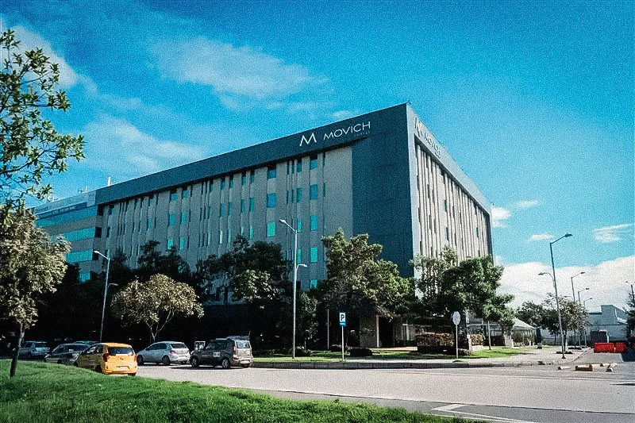
A minutos del Aeropuerto Internacional El Dorado — aterrizas, te reciben, descansas. El viaje empieza con una noche completa de sueño.
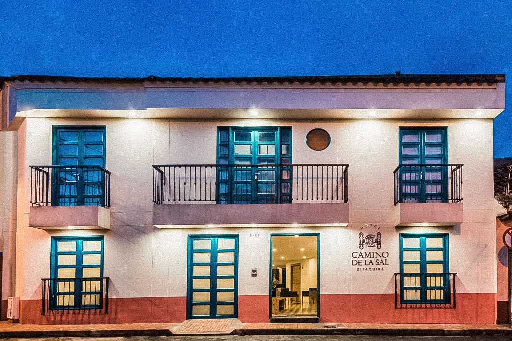
Una casona de estilo colonial en la ciudad de la sal — a pasos de la plaza, y de la catedral tallada en la montaña bajo ella.
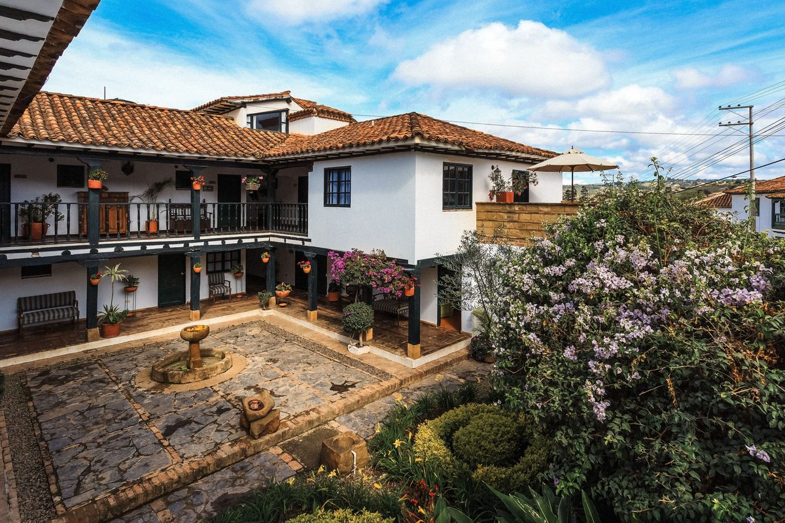
Una casona blanca alrededor de un patio florecido, a un empedrado de la Plaza Mayor — piscina climatizada, sauna y turco para las piernas después de la etapa.
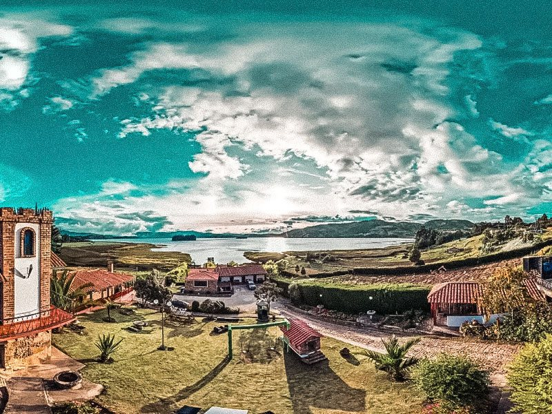
A la orilla del lago a 3.015 metros — despiertas frente al agua y sales rodando desde la puerta. Tu campamento base para los días reina.
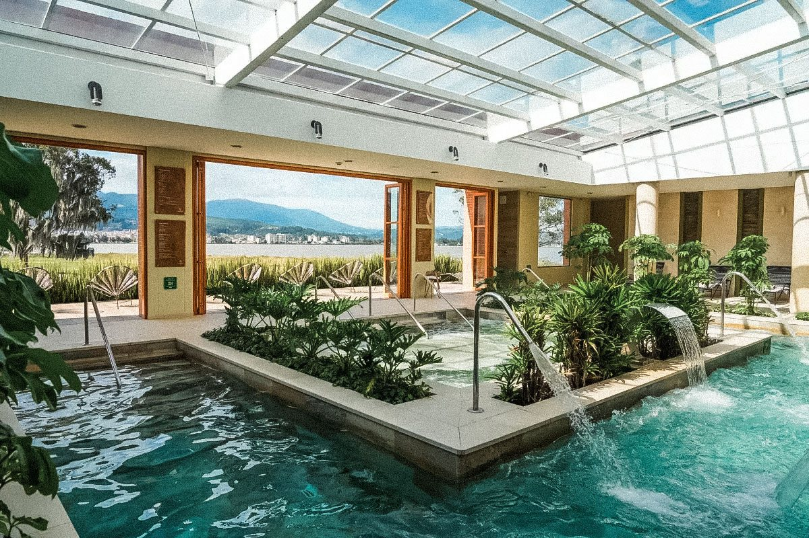
El resort cinco estrellas sobre el Lago Sochagota, alimentado por las aguas termales que hicieron famosa a Paipa — jacuzzi, sauna, turco y masaje para los últimos días. Recuperación, bien hecha.
Cuatro y cinco estrellas · acomodación doble · todos los desayunos incluidos · piscinas o zonas húmedas termales en cada parada de recuperación
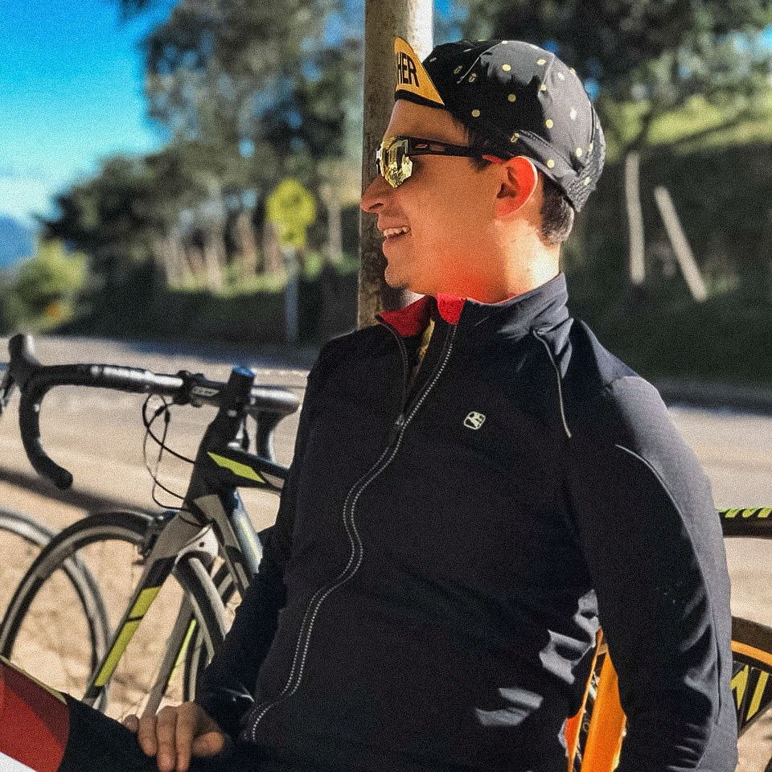
Hay guías que conocen una ruta, y hay guías que conocen un territorio — Sergio es del segundo tipo. Lee el clima del páramo antes de que cambie, te señala dónde nació un campeón nacional, y sabe en qué casa de campo sirven la mejor aguapanela del kilómetro 60. Hay una diferencia entre visitar Boyacá y descubrir su verdadera esencia — nosotros te mostramos la segunda.
Guía principal bilingüe — rodando contigo, leyendo la carretera.
Mecánico-ciclista local — rodando contigo, con la llave en la mano.
Moto de avanzada — marcando la ruta, ubicando al fotógrafo.
Van de apoyo — siempre al final del grupo: repuestos, nutrición, y un aventón cuando lo quieras.
Fotógrafo y videógrafo — los diez días, capturando la historia.
Cada municipio de Boyacá, rodado en bicicleta — el origen de Ride The Andes. Territorio aprendido kilómetro a kilómetro.
Diez ediciones dirigiendo el Gran Fondo Boyacá Mundial desde 2016 — más de 2.000 ciclistas al año. Tu final es su recorrido.
Ha trabajado con L'Étape Colombia y L'Étape Ecuador — la serie oficial de gran fondos del Tour de Francia.
Las seis etapas diseñadas, rodadas y verificadas en campo por nuestro propio equipo — publicadas en Ride with GPS con perfiles completos.
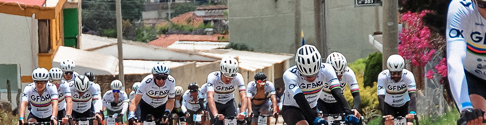
Cuatro salidas en 2027, con el 22–31 de enero como la principal. Diez cupos en cada una, entre ciclistas y acompañantes — mismo precio en todas.
Para parejas y amigos que prefieren explorar antes que pedalear: el viaje completo — hoteles, gastronomía, tours culturales, el catamarán, todos los traslados y tu archivo fotográfico — sin las etapas en bici. Viajan juntos; se encuentran en cada meta.
Precios por persona en acomodación doble. ¿Habitación propia? Suplemento individual de $800 USD por todo el tour. ¿Viajas solo pero no te importa compartir? Te emparejamos con otro ciclista sin costo.
Por persona — ciclistas y acompañantes por igual. Disponible hasta 30 días antes de tu salida (23 de diciembre de 2026 para enero).
Ciclista y acompañante, 16 días antes de la salida, el día que cierran las ventas (6 de enero de 2027 para enero). Fuera del plazo del depósito se paga completo.
Tarjeta y PayPal en ridetheandes.co. Nosotros asumimos todas las comisiones de pasarela y cambio de moneda — pagas el precio publicado.
¿Cambiaste de opinión? Cancelación gratuita dentro de los 5 días hábiles siguientes a la reserva — reembolso total, sin deducciones. Después aplica una escala publicada según la cercanía a la salida, y puedes ceder tu cupo sin costo. Si cancelamos nosotros, eliges entre reembolso del 100% o crédito del 110%. Términos completos en ridetheandes.co. Agencia de viajes operadora inscrita en Colombia — RNT 296185.
Los mismos diez días salen cuatro veces. Enero es nuestra salida principal; en octubre, la Etapa 6 es día de carrera en el undécimo Gran Fondo Boyacá Mundial.
Un tour ciclístico de verdad, para ciclistas cómodos con jornadas de varias horas y ascensos sostenidos — aproximadamente la forma para rodar 3 a 4 horas en días consecutivos. Nunca tienes que competir: la van siempre va detrás de ti, y cualquier etapa puede volverse una etapa parcial cuando lo decidas.
La ruta está secuenciada para aclimatarte: primero las etapas de valle bajo, después la alta montaña alrededor del Lago de Tota, con un día de descanso justo donde cuenta. La hidratación y el ritmo se manejan con cuidado; el equipo observa al grupo de cerca.
Las dos funcionan. Trae la tuya — la recibimos en Bogotá, la armamos, le hacemos mantenimiento diario y la empacamos para tu vuelo de regreso. O alquila una bicicleta premium de carbono, de ruta o all-road, con ajuste profesional, de nuestra propia flota (no incluida; se reserva con anticipación).
La temporada seca de Boyacá: mañanas frescas entre 8 y 12 °C, horas de rodada entre 15 y 22 °C y sol fuerte en la altura — el final de enero le trae a Paipa cerca de un tercio de los días de lluvia de octubre, aunque el Lago de Tota sigue siendo cambiante. Capas, perneras y una chaqueta liviana; la lista completa de equipaje llega con tu confirmación.
La carrera es en octubre y cierra nuestra salida del 9 al 18 de octubre con número oficial. En enero, mayo y agosto, la Etapa 6 rueda el mismo recorrido con su director — fondo completo (143,6 km / +2.120 m) o Medio Fondo (103,2 km / +1.403 m), con el equipo en ruta.
Honestamente: para quien busca su primer viaje ciclístico, o rodadas planas entre cafés. Esto es escalada real a altura real — ganada, acompañada e inolvidable. Si tienes dudas, escríbenos; te lo decimos de frente.
Asistencia médica y de accidentes durante los diez días en Colombia, con el ciclismo de ruta expresamente amparado — no excluido como deporte peligroso, que es lo que hacen muchas pólizas estándar. Las condiciones completas llegan con tu confirmación. No cubre cancelación de viaje, así que recomendamos que contrates tu propio seguro de viaje para eso.
Sí. Dentro de los 5 días hábiles siguientes a la reserva, se te devuelve todo — sin deducciones, sin preguntas. Después aplica una escala publicada, y en cualquier momento puedes ceder tu cupo a otro ciclista sin costo. Los términos completos están en ridetheandes.co.
Llegada: viernes 22 de enero — a cualquier hora; recibimos todos los vuelos en El Dorado (BOG). Salida: domingo 31 de enero — llegamos al aeropuerto a las 2:00 p.m., así que reserva vuelos que salgan después de las 5:00 p.m. Eso cubre prácticamente todos los vuelos nocturnos directos a Europa y varias salidas de tarde a Norteamérica. ¿Vuelas antes? Con gusto te ayudamos a organizar una noche extra en Bogotá (no incluida).
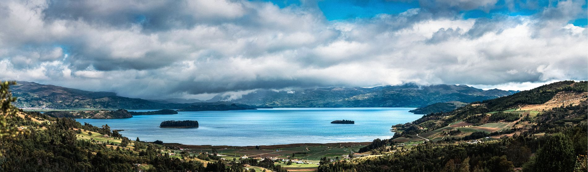
Responde a este dossier, o escribe a reservations@ridetheandes.co — cuéntanos si vienes solo, en pareja o con acompañante.
Un depósito reserva uno de los diez cupos de tu salida. Confirmamos personalmente tu acomodación, el plan de tu bicicleta y cualquier solicitud especial.
Recibirás tu lista de equipaje, notas de entrenamiento y las rutas en Ride with GPS. El primer día te esperamos en el Aeropuerto El Dorado.
Ahora sí puedes confiarnos la semana más importante de tu año.